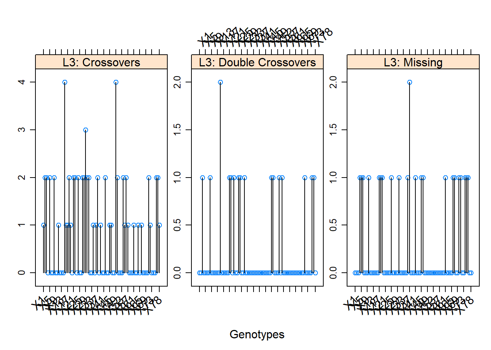

Chapter 13 Genomic prediction.
13.1 Ridge regression and Genomic Prediction in Excel
13.1.1 Introduction
Excel has functions for handling matrix operations, and using these is an easy way to get familiar with matrix algebra, as you can see what is happening. We’re going to have a go at genomic prediction using a subset of data from the TriticeaeGenome wheat association mapping panel. We shall work with a set of ten lines and twelve marker loci, with three traits, height (HT), flowering time (FT) and yield. In our example the ten selected lines were all first listed in 1996. The 12 markers include a marker for PPD_D1, which has a major effect on flowering time, and Rht2, which has a major effect on HT.
The data file we shall use is “gs test class example.xlsx.” It is in the data folder for today’s lecture.
We shall use the following matrix functions:
- TRANSPOSE(x)
- MMULT(x,y)
- MINVERSE(x)
Matrix functions in Excel are different to the usual functions. They apply to a block of cells, not just to one. To enter, first mark the block of cells for the results. For example, to transpose a matrix of n rows by m columns, you would first mark a block of m rows and n columns. Then enter the formula in the normal way, using the formula wizard if you wish, as part of which you will enter the block of cells, n rows by m columns which you wish to transpose. But instead of typing ENTER to finish, hold down CTRL and SHIFT simultaneously then press ENTER. This applies the formula to the whole block, although visually the only difference is that the formula in each cell reference is now encased in {}.
13.1.2 The Exercise
Open the Excel workbook. Start in the “TG example data” sheet.
In this tutorial, you are expected to enter the appropriate formulae in the highlighted cells, working through the tabs, from left to right, either following the instructions below, or following me.
1
a: Note there are no missing data. What would we have to do if there were some?
b: Note there are no monomorphic markers. What would their effect be on the prediction equation?
c: There are ten lines and twelve markers, Why won’t an ordinary regression approach work?To fit a ridge regression of flowering time on the markers, we are going to solve the equation:
\[b = (X’X+Iλ)^{-1} X’Y\]
We’ll work on standardised marker data. We don’t have to but it is common practice. There are arguments for and against this, which we can discuss.
Enter formulae for the mean and variance of each marker where indicated
Move over to the tab “standardised.” We are going to standardise the marker data and create the \(X\) matrix here.
Standardise the data for each marker by subtracting the mean and dividing by the standard deviation. (Leave the column for the mean alone.)
In the next tab, “solution,” we are going to estimate the mean and the marker effects.
At the top, for ease of working, there is a copy of \(X\). Below are \(X’\) and \(X’X\).
Work out \(X’X + Iλ\). (Use “=” to take a copy of \(X’X\), then modify the formula to add \(λ\) to the diagonal.)
Set this up so \(λ\) can be altered for each diagonal element independently – i.e. have a column of \(λ\)’s rather than a single value.
Set all \(λ\)’s to 12 initially (except for any you think should be left alone). I usually start off with \(λ\) equal to the number of markers. Invert \((X’X + Iλ)\) i.e. find \((X’X + Iλ)^{-1}\)
Check the inversion has been carried out correctly.
Change \(λ\) back.
Calculate \(X’Y\)
Calculate the solution - \(b = (X’X+Iλ)^{-1} X’Y\)
7
See what effect changing λ has on the solution:
a: What happens when you set λ to very high values. b: What happens when you set λ to different values for different markers. c: How many values of λ can you set to zero and still get a solution? Any idea why?8
In the next tab “pred in training pop”: For any value of λ, predict the performance of the ten lines and compare it to the observed performance. You can get these through matrix multiplication as Xb. What is the best prediction you can get?Comparing observed and predicted values with the same set of lines used to create the prediction equation gives an over optimistic view of accuracy. The predictions would be biased if we search for the value of \(λ\) which gives the best fit. Therefore we need to test our prediction in a separate set of lines. In practice (hard in Excel), we would use 90% of the lines in the TG dataset to work out the prediction equation, and the remaining 10% to test the prediction. This could be repeated this by leaving out 10 independent sets of 10%. This is called “ten-fold cross validation.” Five-fold cross validation also frequently used.
For this exercise, we will instead use the 10 lines in the training set to predict the remaining 307 lines in the TG panel. At the top of the sheet “pred in test pop” you will find marker and height data for the lines in the TG panel (including the ten in the training population. These ought to have been removed for a fair test.) We can use these to see how well the prediction equation from the training panel performs.
Underneath the data:
Standardise the marker scores. Remember that the marker data must be standardised using the mean and the variance of the ten lines in the test set so that the prediction equation is valid on these lines. Should we have standardised the training population using the mean and variance of the entire dataset? I don’t know but we could alter the workbook to test this.
Again, use \(Xb\) to predict their performance.
The predictions will be much worse than those for the lines in the training population. Ten lines in the training population was a ludicrously small number used for demonstration purposes only.
9
a: Returning to the “solution” worksheet, try different values of λ for different SNPs. Two of the markers tag known major genes in wheat: Ppd for flowering time and Rht for height. You can remove the penalty for those loci, or set one value of λ for those and a different one for the remaining SNPs. Experiment. Can you improve the agreement between predicted and observed further?
b: For this small data set, you can also set a different value for λ for each SNP and search for the values which give the maximum correlation. Use Solver to try this. What is the highest correlation achieved for heightIt would be great if we could do this routinely in a training population with large numbers of markers and individuals, but that is not possible. Instead, other models are used in which an assumption is made about the nature of the marker effects and the genetic architecture of the trait. This prior knowledge allows different penalties to be fitted to each marker. The methods Bayes A and Bayes B do this for example. Bayes B estimates a proportion of the markers to have no effect on the trait. (Ridge regression and Bayes A give every marker an effect, no matter how small.) In practice, it has been found that there is usually little difference between methods, so using ridge regression doesn’t go too far wrong. This is not guaranteed, however.
13.2 Genomic Prediction with rrBLUP
13.2.1 Introduction
Genomic Selection was first proposed in 2001 (Meuwissen, Hayes, and Goddard 2001). It looked ahead to the use of high density markers to cover the whole genome, selecting on a score accumulated over marker intervals. It is now much discussed in plant breeding (Bernardo and Yu (2007), Heffner, Sorrells, and Jannink (2009), Piepho (2009), Jannink, Lorenz, and Iwata (2010)). The basic idea is that all markers or marker intervals are included in a model of phenotype-genotype relationships simultaneously. Because there is no selection of a subset of markers which are significant, there is no bias from the winner’s curse. However, there are generally more markers than genotyped individuals available on which to estimate the marker effects and this causes statistical problems. The predicted trait value is generally called the GEBV for genomic estimated breeding value. Strictly, our predicted values aren’t breeding values in the animal genetics sense, but we’ll still use that terminology as shorthand. An excellent source of on-line information is the course notes of BJ Hayes, one of the authors of the original publication. See this link.
We’re going to have a go at Genomic Selection using some DArT marker data on wheat
NL/RL varieties, using rrBLUP (ridge regression BLUP). A description of ridge regression is
given in the lecture notes. The intention is to demonstrate that genomic prediction is really
easy to do, but the answers you get depend critically on the composition of your data: the
skill is not in running the software but in interpreting the results.
The basic idea we shall follow is of “cross validation.” We shall partition the complete dataset into test and training sets. In the training set, we calibrate markers against the phenotype. We then use this calibration to predict phenotype from markers in the test set. Finally we can compare observed and predicted phenotypes and see how we’ve done. In this way we can compare the efficiency of different methods of calibration and of relationships between the test and training sets. One can also partition the data into test and training sets in many different ways – either at random or systematically to see what effect this has on predictions. Test and training sets don’t have to be of equal size. Often, the test set is small – say a fifth of the total. There are then five independent partitions of the data and one would look at all of them.
In ridge regression, we are solving the equations (see the lecture notes):
\[b = (X’X+Iλ)^{-1} X’Y\] \(b\) is the vector of regression coefficients: one for the mean plus one for each marker. \(X\) is a matrix of marker effects, one column for each marker with values 0 or 1 (or 0, 1 2 if we had heterozygotes). \(λ\) is a user supplied penalty to apply to each regression coefficient. \(Y\) is the vector of yields, and \(I\) is the identity matrix.
This is the usual least squares solution for multiple regression, except that a penalty, \(λ\), is added to the diagonal elements of \(X’X\). If \(λ\) is zero, the \(b\) are the usual least squares estimates.
Just as with BLUP, the regression coefficients are shrunk from their least squares values towards zero. Because of this, ridge regression is usually carried out after \(Y\) is first adjusted to a mean of zero: it doesn’t make sense to want to shrink the mean towards zero too. Equivalently, the penalty is not applied to the first entry of \(X’X\) so the mean estimate is not shrunk.
The covariates are often standardized to zero mean and unit variance to ensure that all variables are on the same scale. With marker data it is arguable whether this is necessary or not: the scale is 0…1 for every marker. In practice, it doesn’t seem to matter much whether you standardize or not with the datasets I’ve looked at so far.
More of a problem is to decide on the appropriate value for the penalty, \(λ\). According to
Hayes, if \(λ = σ^2e / σ^2g\) this is equivalent to BLUP. Here, \(σ^2g\) is the contribution to the genetic variance for each marker and not \(σ^2g\) for the whole genome. The package rrBLUP (Endelman 2011) follows this approach. Alternatively, one could select \(λ\) through cross validation.
We are going to use a lot of R code. Don’t worry too much if you don’t understand it all. Much of the data processing could equally be done in Excel. Aside from learning R, its advantage is that once you’ve done something once, you can easily save and modify the commands to run on other datasets. However, the most important point of this exercise is to understand something about the strengths and weaknesses of genomic selection.
Load R. Check that rrBLUP has been installed. If not, download it from the CRAN. Remember that after installing a package you must also load it into the current R session to be able to use it.
13.2.2 The dataset
Data are in “NL_RL_GS.xls.” The sheet “extended UK set” contains the raw data. There are 159 varieties of winter wheat with yield data, and 217 DArT markers, largely unmapped. Ideally, we would need more markers and more individuals. Note also that the year in which the variety was first tested in UK National List trials is given. These data are a subset of those analysed in Mackay et al. (2011) in which you will find more information about the origins of the data.
13.2.3 Loading and preparing the data
The data are in the spreadsheet NL_RL_GS.xls. You’ll see that there are some missing data. These have been imputed using “softImpute” and are also in the spreadsheet. These data have been saved as a csv file for ease of input.
Read in the data :
#delete the "data/" if you copy this
NLRL<-read.csv("data/NL_RL_GS.csv",header=TRUE)Check the size of the dataset:
dim(NLRL) # Markers start in column four.## [1] 159 22113.2.4 Examining the data structure
attach(NLRL)## The following object is masked from TG_data_for_day_1:
##
## yieldBefore moving on to the ridge regression itself, we’ll look at the dominant feature of these data: the relationship between yield and age of varieties, given here by the column “year_in” which is the first year the variety entered this trial series.
plot(NLRL$year_in,NLRL$yield)
#Just because we can, add a trend line:
abline(lm(yield~year_in))
Finally, try this:
identify(year_in,yield,labels=Name) - You’ll need to mouse-over the graph and click. (In Rstudio, nothing happens until you “Finish” in the graphics window. This works better in native R. Any comments on the graph?
We’ll look at one other feature of the data before we move on: how genetic relationships among varieties have changed over time. The relevance of this will be seen later. To do a thorough job, we would analyse the data with packages designed for this task. Here, we’re going to do a cheap and cheerful analysis using some standard R functions. For ease of display, we’ll pool varieties into decade groups and display the relationships between decades.
Don’t worry about the R code here: with a bit of experience, searching and by asking colleagues, your knowledge begins to grow. Or you stumble across something in someone else’s code. I only discovered “identify” a couple of years ago.
We’re going to calculate the mean allele frequency for each marker, and save the results. First, we define a matrix to keep the results. There are seven decades in the dataset and 217 markers:
decade_means<-matrix(nrow=7,ncol=217)For ease of interpretation, I want to name the rows of this matrix by their decades.
rownames(decade_means)<-c(1940,1950,1960,1970,1980,1990,2000)The next bit of code defines the means:
decade<-10*(year_in-1940)%/%10+1940
for(i in 5:217) decade_means[,(i-4)]<-(tapply(NLRL[,i],INDEX=decade,FUN=mean))The first line creates a new variable with the decade in which each variety entered trial. The %/% structure is new. It is for integer division, in which 41/10 = 4, 49/10 = 4 and 50/10 = 5. So you can see the line takes the year each variety entered trial and returns the decade of entry.
The second line takes the mean allele frequency for each marker in each decade and saves
it. tapply() is a command which applies an R function (given in FUN=mean) to each column
of the data (in NLRL[,i]) for each value of the grouping criterion (given in INDEX=decade). You can write a loop to do exactly the same thing, but tapply is quicker. I only learned about this from a course I gave in which there were several R gurus among the participants.
Have a look at the first few rows of decade_means to check that it has worked.
Now we estimate a genetic distance between our mean allele frequencies using the R command dist. This has a number of options (see help(dist)for what distance measure to use. The default is Euclidian which is reasonable.
decade_dist<-dist(decade_means,diag=TRUE)decade_dist should be 7x7 matrix of distances between decades. Have a look at it. Can you see the pattern? You can visualize it:
image(1930+(1:7)*10,1930+(1:7)*10,as.matrix(decade_dist))
A more sophisticated view, which includes a tree is given by:
heatmap(as.matrix(decade_dist))13.2.5 Ordinary least squares
We are now ready to have a go at getting some GEBVs. First, let’s demonstrate that having more markers (217) than varieties (159) is a problem. Use ordinary linear regression to fit three markers, then fit all the markers. To fit three markers:
# regress yield on the first three markers
anova(lm(yield~NLRL[,5]+NLRL[,6] +NLRL[,7]))## Analysis of Variance Table
##
## Response: yield
## Df Sum Sq Mean Sq F value Pr(>F)
## NLRL[, 5] 1 13.66 13.6567 6.0150 0.01529 *
## NLRL[, 6] 1 1.98 1.9846 0.8741 0.35128
## NLRL[, 7] 1 0.01 0.0068 0.0030 0.95650
## Residuals 155 351.92 2.2704
## ---
## Signif. codes: 0 '***' 0.001 '**' 0.01 '*' 0.05 '.' 0.1 ' ' 1To fit all the markers, we don’t want to enter NLRL[,5] + NLRL[,7] + ... dim(NLRL+ NLRL[,221])) by hand. We have to tell R to treat the data we have read in as a matrix, and then the lm command will let us reference the columns of the matrix:
# fit all markers
anova(lm(yield~as.matrix(NLRL[,5:221])))## Warning in anova.lm(lm(yield ~ as.matrix(NLRL[, 5:221]))): ANOVA F-tests on an
## essentially perfect fit are unreliable## Analysis of Variance Table
##
## Response: yield
## Df Sum Sq Mean Sq F value Pr(>F)
## as.matrix(NLRL[, 5:221]) 158 367.57 2.3264
## Residuals 0 0.00How many markers can you fit? The anova tells you.
13.2.6 rrBLUP
We’ll now use rrBLUP for genomic prediction . rrBLUP predicts individual performances
using a genomic relationship matrix, but can transform results from this into weightings for
individual markers. There is no search for an optimum value for \(λ\); this comes from the
estimates of genetic and environmental variances among lines.
rrBLUP for GWAS, although the manual says you can. Use the additional
package from the same source; GWASpoly, which we used earlier in the week.
Install the package if this has not been done. Then load it for use:
library(rrBLUP)rrBLUP requires that marker data are coded as -1, 0 +1 rather than 0,1,2. This allows the transformed marker data to be used to create a relationship matrix which takes into account differential inbreeding among parents and produce valid estimates (BLUPs) of the individuals under consideration. Data are currently coded 0 and 1, so to transform these values -1 and +1, subtract a half then multiply by two:
NLRL[,5:221]<-(NLRL[,5:221]-0.5)*2There are no missing data in this dataset, but rrBLUP will handle missing data automatically. Let’s first see if prediction using a genomic relationship matrix and prediction from ridge regression give the same answer.
mixed.solve is the command for fitting the mixed model to either a relationship matrix
among lines or by regression on markers. First, by use of a relationship matrix:
BLUP <- mixed.solve(NLRL$yield,K=A.mat(NLRL[,5:221]))
pred.BLUP<-as.numeric(BLUP$beta)+BLUP$u
plot(pred.BLUP,NLRL$yield)cor(pred.BLUP,NLRL$yield)## [1] 0.958079A.mat uses rrBLUP’s internal definition of kinship, and therefore of the additive relationship matrix. Alternative relationship matrices can be provided too. Next, by ridge regression:
pred.RR<-mixed.solve(NLRL$yield,NLRL[,5:221], method="REML",bounds=c(1e-09,
1e+09), SE=FALSE, return.Hinv=FALSE)
pred.RR.all<-as.matrix(NLRL[,5:221]) %*% pred.RR$u +
as.numeric(pred.RR$beta)
plot(pred.RR.all,NLRL$yield)cor(pred.RR.all,NLRL$yield)## [,1]
## [1,] 0.9580788Now compare the results from the two:
plot(pred.RR.all,pred.BLUP)- How do the results compare? We can see what the maximum possible predicted yield is:
sum(abs(pred.RR$u))+pred.RR$beta## [1] 14.17547Is this realistic? To use the kinship matrix to predict the performance of individuals with no phenotype, include those individuals in the computations, but with their phenotype set to NA:
samp.temp<-sort(sample(159,50,replace=F))
temp <-NLRL[,3]
temp[samp.temp] <- NA
BLUP <- mixed.solve(temp,K=A.mat(NLRL[,5:221]))
pred.BLUP<-as.numeric(BLUP$beta)+BLUP$u
cor(pred.BLUP[samp.temp],NLRL[samp.temp,3])## [1] 0.7937956plot(pred.BLUP[samp.temp],NLRL[samp.temp,3])
How does this accuracy compare with predictions for those with missing data?
plot(pred.BLUP[-samp.temp],NLRL[-samp.temp,3])cor(pred.BLUP[-samp.temp],NLRL[-samp.temp,3])## [1] 0.976045113.2.7 Prediction forward in time
The results so far are positive. Given a new variety, we can predict its yield well without running any variety trials. The predictions are dependent on the quality of the phenotype data, so unless heritability is 100%, we’ll never get a perfect correlation. In fact, the upper limit for the correlation is h, the square root of the phenotypic heritability.
For breeding purposes, we would be predicting forward in time using historical data: we don’t want to predict the performance of old varieties which are most likely already outclassed. To test this, we can split the data in half on age, using the old varieties as the training set and the new varieties as a test set. We’ll manipulate the data in R.
First find a suitable point to split the data:
median(NLRL[,"year_in"])## [1] 1989You can check the split by counting the number of varieties lying above and below your cutoff.
sum(NLRL[,"year_in"]<1950)## [1] 13sum(NLRL[,"year_in"]>=1950)## [1] 146Now set the most recent half of varieties to missing values for their phenotype:
temp <-NLRL[,3]
temp[NLRL[,4]>=1989]<-NAFit BLUPs to the modified dataset, both for cases where phenotypes are present or missing:
BLUP <- mixed.solve(temp,K=A.mat(NLRL[,5:221]))
pred.BLUP<-as.numeric(BLUP$beta)+BLUP$uHow good a fit for the lines with missing phenotype:
cor(pred.BLUP[NLRL[,4]>=1989],NLRL[NLRL[,4]>=1989,3])## [1] 0.2056729plot(pred.BLUP[NLRL[,4]>=1989],NLRL[NLRL[,4]>=1989,3])
How good a fit for the lines with phenotype:
cor(pred.BLUP[NLRL[,4]<1989],NLRL[NLRL[,4]<1989,3])## [1] 0.9411743plot(pred.BLUP[NLRL[,4]<1989],NLRL[NLRL[,4]<1989,3])Try plotting over a specific range. This makes it easier to compare accuracy with age difference from training population. For example:
upper<-20000
lower<-2000
cor(pred.BLUP[NLRL[,4]<upper & NLRL[,4]>lower],NLRL[NLRL[,4]<upper &
NLRL[,4]>lower,3])## [1] 0.1606659plot(pred.BLUP[NLRL[,4]<upper & NLRL[,4]>lower],NLRL[NLRL[,4]<upper &
NLRL[,4]>lower,3])Alter upper and lower to compare accuracies in different ranges of the test population.
Can you explain the results? We shall discuss them!